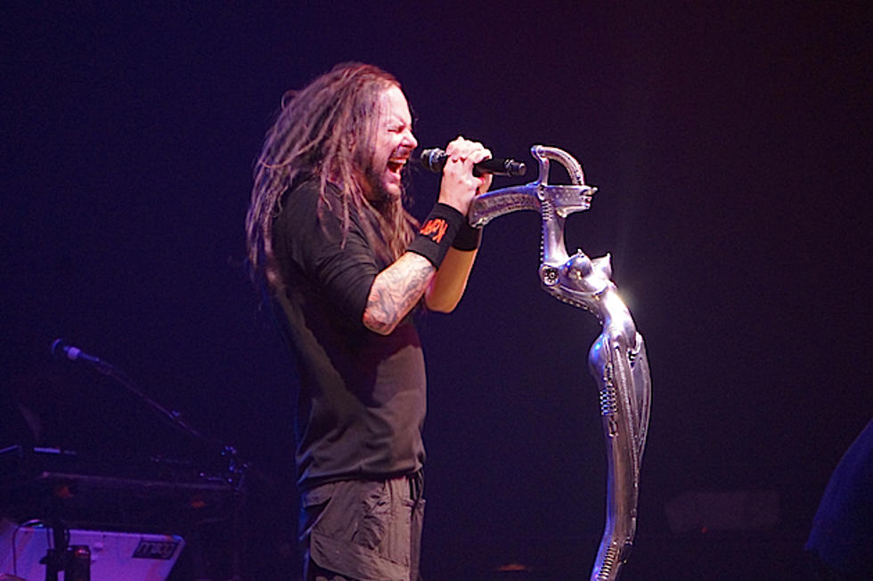
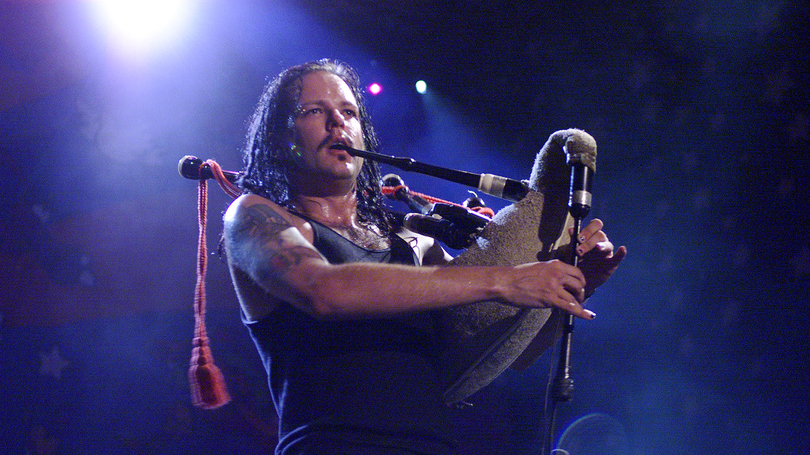
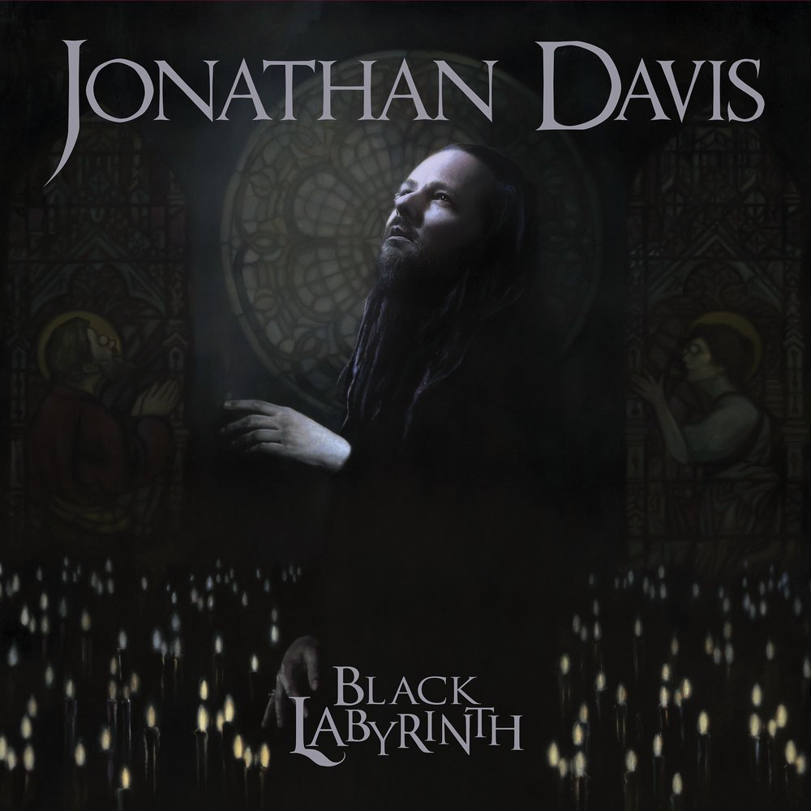
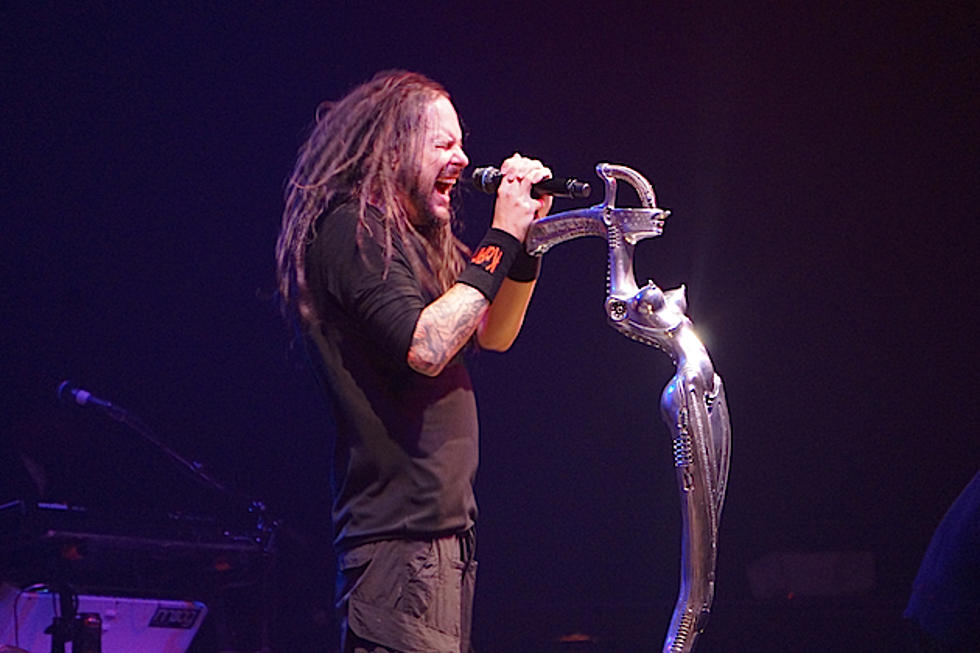
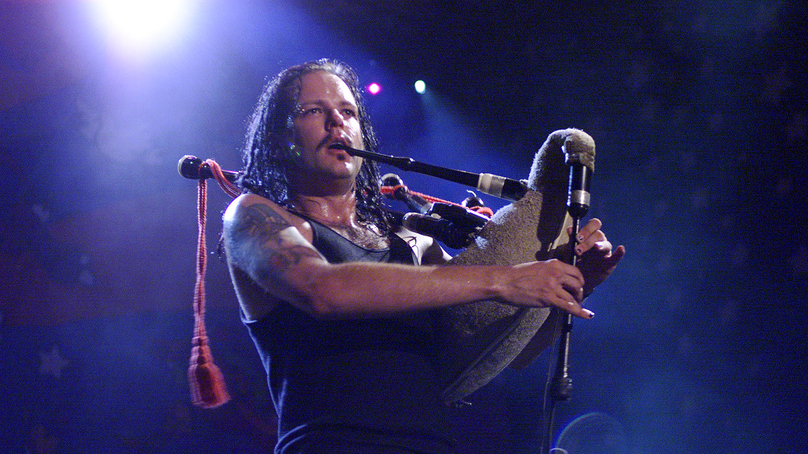
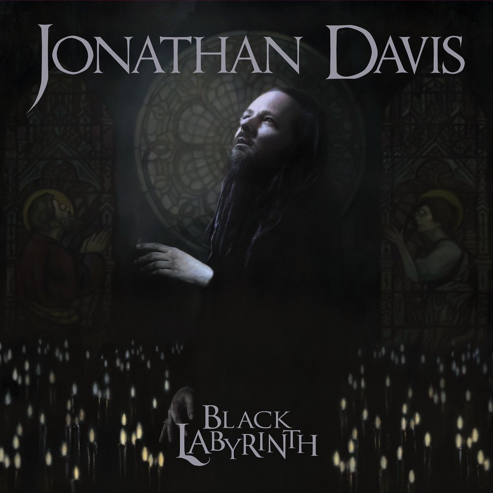

Jonathan Howsmon Davis (born January 18, 1971), also known as JD, JDevil, or J Devil, is an American singer, songwriter and musician. Davis is best known as the lead vocalist and frontman of the nu metal band Korn, and he is considered as the pioneering act of the nu metal genre. Davis' own distinctive personality and Korn's music influenced a generation of musicians and performers who've come after them.
Davis co-founded Korn in Los Angeles, California, in 1993 with the dissolution of two bands, Sexart and L.A.P.D. He had led Sexart during his years as an assistant coroner. Davis rapidly gained notoriety for his intense and powerful live performances with Korn. Anchored by his personal, passionate lyrics and unusual tenor vocals, Davis launched a successful career which has spanned almost three decades, although his popularity declined in the middle of the 2000s. Davis' vocals, which alternates from an angry tone to a high-pitched voice, switching from sounding atmospheric to aggressively screaming, have been the trademark of Korn throughout the band's career.
In 2000–2001, Davis and Richard Gibbs wrote and produced the score and soundtrack album of Queen Of The Damned. He began his side project called Jonathan Davis and the SFA in 2007, and continued to experiment with musical styles. He released his first solo album in 2018. He has collaborated with various artists over the course of his career, ranging from metal to alternative rock, rap, world music and electronic music. Davis is a multi-instrumentalist musician who plays guitar, drums, bagpipes; piano, upright bass, violin, and the clarinet. He is also versatile in many genres, mixing tracks and performs DJ sets. For decades he has been passionate about visual arts, horror movies, comics and video game.
Fourteen of his albums reached the top 10 on the Billboard 200, including MTV Unplugged and Greatest Hits, Vol. 1. He won two Grammy Awards out of eight nominations throughout his career. As of 2018, Davis has sold 40 million albums worldwide.